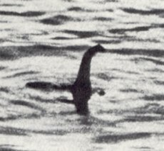

Il mostro di Loch Ness (in lingua inglese: Loch Ness Monster, in gaelico scozzese: Uilebheist Loch Nis, familiarmente Nessie, è la creatura che secondo una leggenda abiterebbe nel Loch Ness, in Scozia.Non esiste alcuna prova dell'esistenza del cosiddetto "mostro" e, nonostante lo svolgimento di ricerche scientifiche nel lago,tutti i tentativi di trovare tracce della creatura o spiegazioni del mito sono falliti, e le presunte immagini fotografiche del "mostro" si sono rivelate false o comunque prive di valore scientifico. La notorietà e il fascino della leggenda sono comunque in grado di attirare a Loch Ness circa un milione di turisti ogni anno.La leggenda ha avuto negli anni una vasta risonanza mediatica e ha ispirato la realizzazione di lungometraggi cinematografici, documentari televisivi, narrativa, fumetti, videogame, merchandising e giocattoli.
"Foto del mostro
